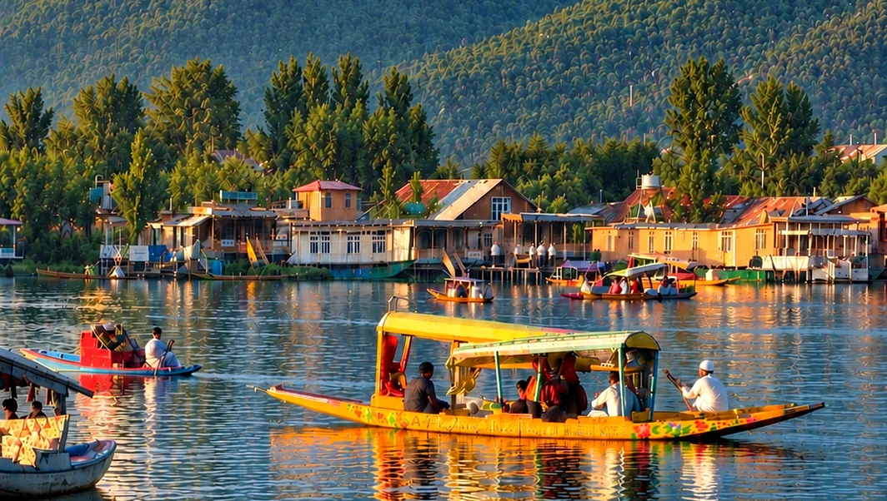
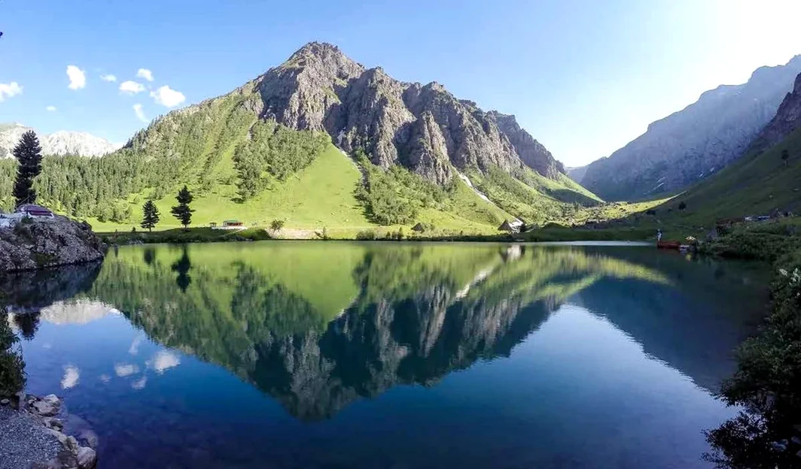

← All escapes
SIGNATURE ESCAPES · 4 NIGHTS / 5 DAYS
Beyond Kashmir
Hidden valleys. Alpine trails. Stories worth keeping.
THE EXPERIENCE
Made for the days you’ll remember.
A Jammu-to-Jammu, five-day journey through Srinagar, Naranag, Domail and Sonamarg — combining mountain stays, a gentle trek and a Dal Lake experience.
✦Srinagar and Dal Lake
✦Naranag village
✦Domail trek and camp
✦Sonamarg alpine scenery

YOUR JOURNEY, DAY BY DAY
Follow the scenic route.
- Morning pickup from Jammu
- Scenic drive and hotel check-in
- Explore nearby areas
- Dinner and overnight stay
✓ What's included
- Hotel, homestay and camp accommodation
- Breakfast and dinner
- Jammu-to-Jammu transport
- Trek and riverside camping
- Bonfire and jam session
- Dal Lake Shikara ride
− Not included / extra
- Flights or trains to Jammu
- Lunch on travel days and personal expenses
- Entry permits and tickets where applicable
- Additional activities outside the itinerary
BEFORE YOU BOOK
Know before you go.
- Price and supplier availability are subject to final OFFDAYA confirmation.
- Weather, trekking safety and local conditions can affect the route and schedule.
- Accommodation, transport logistics, payment schedule and cancellation rules must be confirmed before payment.
- Package starts and ends at Jammu; travel to Jammu is excluded.
LET'S MAKE IT HAPPEN
Your trip starts with a conversation.
Tell us your dates, and we'll help you plan the rest. We do not collect payments on this website.